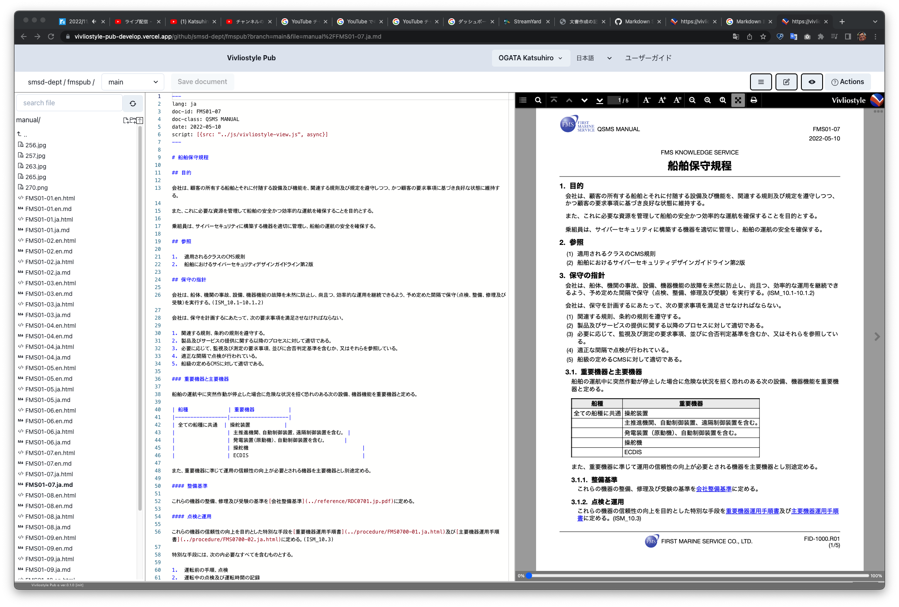

Vivliostyle
もう一つのブルーオーシャン
小形克宏
2022年11月20日
Vivliostyle ユーザーと開発者の集い2022秋
本日のアジェンダ
- Vivliostyle.jsはライブラリです
- つまりVivliostyle.jsから、新たなアプリが作れます
- Vivliostyleは思われている以上の、たくさんの未来があります
- あなたがそれを作りさえすれば
Vivliostyleといえば
印刷用PDF作成
- 技術書典が近づくとVivliostyle CLIのダウンロードが急増
- Vivliostyleにとって印刷用PDF作成はブルーオーシャン
- しかし、Vivliostyleの用途はそれだけ？
WordとMarkdownの比較
- Wordの困ったところ
- 共同編集すると、編集したところが消える
- フォントやデザインがなぜか統一されない
- セクションごとに担当を分けても、マージが手作業
- Markdownを使うとよいが、デメリットも
- 執筆とデザインを分離できる
- マージするのにGitHub（ブランチ）を使える
- その一方で図版キャプション等、記法に限界がある
そこでVivliostyleを使ったら
- Vivliostyleのメリット・デメリット
- （Markdownのメリットに加えて）
- VFMなら図版キャプションが使える
- SCSSでスタイル指定できる
- ページごとにスタイルを変えられる
- PDF出力が簡単
- しかし、表にキャプションが入れられない
- 10月開発者会議で作者のとみー氏がさらなる詳細を報告
まとめ
- Vivliostyleの良いところ
- 冪等性：編集してもスタイルが変わらない
- Gitを使ってバージョン管理ができる
- 共同編集がしやすい
- その上、PDFにも出力可能
- これらのメリットは、印刷用PDF作成でも同じ
- つまり、これらのメリットが生きる用途ならVivliostyleは使える
- 同社は国際輸送の船舶管理会社（非エンジニア・ユーザ）
- 海外運行中の船舶向け書類をVivliostyle Pubで共同編集
- 今年1月以来、現在まで300本以上の文書を作成
実際の文書を紹介①
 画像、表組のある英語文書
画像、表組のある英語文書
実際の文書を紹介②

日本語文書、表組はMarkdown
まとめ
- 前述Vivliostyleのメリットはエンジニアだけのものではない
- 非エンジニアでもGitを使ってバージョン管理ができる
- 非エンジニアでもブランチを使って共同編集できる
- つまり、共同編集はもう一つのブルーオーシャン
とみーさんのスライドから引用
 「製造業でドキュメントをVivliostyleで運用した話」より
「製造業でドキュメントをVivliostyleで運用した話」より